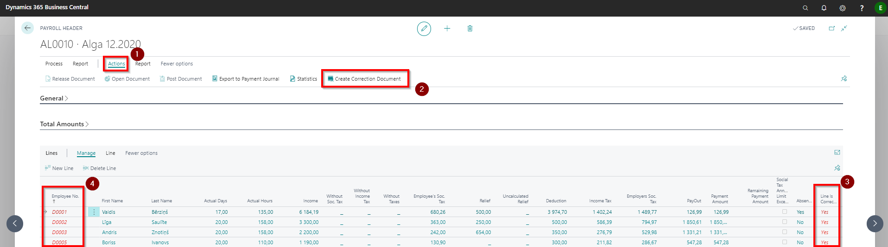
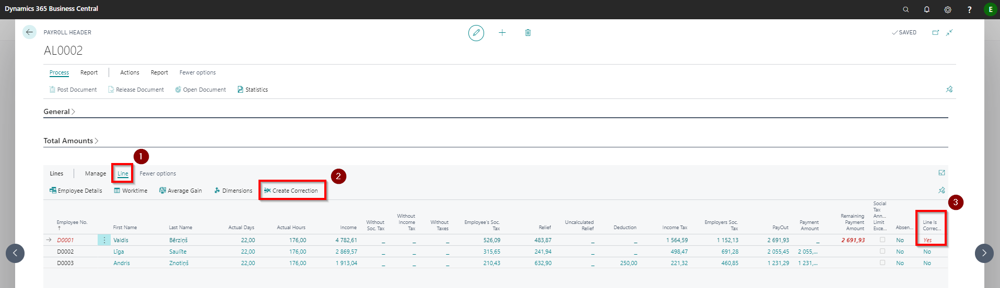

Corrections and cancelations
Correction lists
If it is necessary to adjust the calculation in the already booked / paid salary list, tax amounts, income amounts, payout amounts and others, then the correction functionality must be used. Because the correction can be made only when the previous calculation is canceled. All the created correction lists are compiled in a register Correction Headers.
There are different types of possible corrections:
All employees in the Salary List have the same error in the payroll calculation:
1) on the salary list toolbar click the buttons Actions ( ) - Create Correction Document (
) - Create Correction Document ( );
);
2) a line generation window will pop up, where you can set filters if necessary.
3) will be generated a correction list in which the whole calculation one to one is reversed. The list of cancellations must be posted!;
4) data correction should be performed and a new salary calculation must be prepared. The amount of the first payroll payments will be included in the next calculation as a deduction.After posting the reversal, in the corrected salary list's tab Lines reversed entries will be marked with Yes (
 ), that the line has a correction and the corresponding employee codes are highlighted in red (
), that the line has a correction and the corresponding employee codes are highlighted in red ( ). By clicking on a link Line Is Corrected (), a correction list will open in which the whole one-to-one calculation is canceled.
). By clicking on a link Line Is Corrected (), a correction list will open in which the whole one-to-one calculation is canceled.

Error in calculation algorithm due to incorrect tax rate, amount of relief, etc.:
1) correct tax, relief, etc. rates;
2) creates a new salary list without reversing or correcting the previous salary list;
3) click the button Insert New Lines and enables the function Create correction line, if exist payroll for this month in the payroll lines generation window. If necessary, select the same filters as it was in the payroll to be corrected;
4) the system will prepare a list of corrections that need to be posted. The amount of the first salary list payments will be included in the next salary list calculations as a deduction.Error in calculating salary for one or more employees:
1) In the Lines tab of the Salary List, select the employee (or several) who needs a correction.
2) By clicking the buttons *Line *buttons () and Create Correction () the line is marked as corrected .
3) Make corrections and prepare a new salary list, where the calculation is made only for the corrected employee (or several).

Tip
If the initial salary list was not paid before the corrective list was created (the payment has not been posted), the system will not allow the payments to be exported, because the next payroll will take into account the information about the payments at the time of cancellation.
In case the salary calculation has been reversed and a new salary calculation has not been created for this month, all entries for this month are opened for correction: in the component registers, the absence registers and hour registers.
Absence corrections
We recommend to perform all absence corrections in the current month by correcting the previous salary list!
Sick List received late
Example: calculated and paid salary for 07.2020. A sick list has been received from the employee for the period 27.07.2020 - 05.08.2020.
Option - perform salary calculation correction in the current period 07.2020.
1) in the salary list 07.2020 a correction shall be made for the line of the relevant employee. Post the correction list;
2) In Absence Registration register a new sick leave and indicate 07.2020 in calculation date fields;
3) prepare a new Salary List for 07.2020 and in the tab Line include only the employee who needs to make the correction. Take into account, if a Hour Registers has been used to enter the hours worked by this employee, the system does not recalculate the salary component and the number of hours must be adjusted manually;
4) depending on the result, if extra payment must be made, then use function Export to Payment Journal, but if a deduction has to be made, it will be included in the calculation of salary 08.2020.Option - perform salary calculation correction in the next period 08.2020.
1) In Absence Registration enter a new sick leave and indicate 08.2020 in calculation date fields
2) In Employee absence card click on button * Recalculate*. In Absence Register list a check mark Recasted appears for this entry. As a result of the recalculation, the system creates a entry in Component Register for the current period (08.2020) with the previous month's salary correction records.
3) at the end of the period, calculate the salary for the current month. The income calculation will be included the previous month's adjustments.
Several sick leaves received late
Example: calculated and paid salary for 07.2020. Have been received from the employee a sick list A for the period 15.07.2020 - 24.07.2020 and sick list B for the period 25.07.2020 - 03.08.2020. Correction will be performed in next month - 08.2020.
1) In Absence Registration enter sick leave for a sick list A and indicate 08.2020 in calculation date fields. Do not recalculate!
2) In Absence Registration enter sick leave for a sick list B and indicate 08.2020 in calculation date fields. Recalculate by clicking on the button Recalculate.
When all absences have been entered, clicking on Recalculate once system collects information about all absences and it will make a one calculation based on all absences in the Component Register. In case that a recalculation is made for each absence, the result will be double entries, so the recalculation only needs to be performed once.
Employee gets ill during vacation
*Example: Salary calculated and paid for 07.2020. The employee has a vacation starting from 15.07.2020 and to 31.07.2020. The employee got ill during the leave and submitted sick list A for the period 19.07.2020. - 21.07.2020. and sick list B for the period 22.07.2020. - 31.07.2020. The correction will be performed in next month - 08.2020. *
1) In Absence Registration enter sick leave for a sick list A and indicate 08.2020 in calculation date fields. Do not recalculate!
2) In Absence Registration enter sick leave for a sick list B and indicate 08.2020 in calculation date fields. Do not recalculate!
3) In Absence Registration enter the vacation 15.07.2020. - 18.07.2020. and indicate 08.2020 in calculation date fields. Do not recalculate!
4) Open the absence card of the initial vacation and cancel it by clicking the button Cancel Absence. As a result of cancellation, the absence code ATVAL will be changed to the code CORRECTION, and also system created entries 08.2020 will be added to Component Registers (salary changes (if any), vacation pay paid). This information will be included in the salary calculation of 08.2020.
Employee withdrawn from vacation
Example: The employee has a vacation 15.07.2020 - 31.07.2020. Calculated and paid vacation pay and salary for 07.2020. After that it turns out that the employee has worked during 20.07.2020. - 21.07.2020. Correction will be performed in next month - 08.2020.
1) In Absence Registration enter the vacation 15.07.2020. - 19.07.2020. and indicate 08.2020 in calculation date fields. Do not recalculate!
2) In Absence Registration enter the vacation 22.07.2020. - 31.07.2020. and indicate 08.2020 in calculation date fields. Do not recalculate!
3) Open the absence card of the initial vacation and cancel it by clicking the button Cancel Absence. As a result of cancellation, the absence code ATVAL will be changed to the code CORRECTION, and also system created entries 08.2020 will be added to Component Registers;
4) If the hours actually worked for the employee are recorded Hour Registers, then enter the number of additional hours worked.
The result of the recalculation will be included in the 08.2020 salary list, erroneous and posted salary list 07.2020 will be left unchanged. The system with a minus sign will deduct the calculated vacation pay and add the salary for these days (except if working hours are entered via Hour Register). The amounts will be allocated to the periods for which they are calculated.
Changes in Absence start or end date
If the employee has an calculated absence, but after the calculation of the salary it is discovered that the period of absence was not correct, then it is possible to adjust this in the next period:
1) enter the correct absence, indicating the calculation month in which the correction is made;
2) cancel the previously entered absence by clicking the button on the absence card Cancel Absence;
3) calculate the current period salary. The differences between the correct and incorrect absence amounts are added to the current salary list with the help of the system-generated Component Register entry.